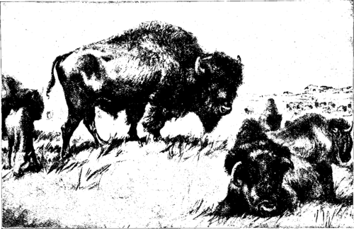

The Last Of The Buffalo. Part 2
Description
This section is from the book "Hunting", by Archibald Rogers. Also available from Amazon: Hunting.
The Last Of The Buffalo. Part 2
The former range of the buffalo has been worked out with painstaking care by Dr. J. A. Allen, to whom we owe an admirable monograph on this species. He concludes that the northern limit of this range was north of the Great Slave Lake, in latitude about 63° N.; while to the south it extended into Mexico as far as latitude 25° N. To the west it ranged at least as far as the Blue Mountains of Oregon; while on the east it was abundant in the western portions of New York, Pennsylvania, Virginia, North and South Carolina, and Georgia. In the interior the buffalo were very abundant, and occupied Ohio, Kentucky, West Virginia, Tennessee, western Georgia, Illinois, Indiana, and Iowa, parts of Michigan, Wisconsin, and Minnesota, the whole of the great plains, from southern Texas north to their northern limit, and much of the Rocky Mountains. In Montana, Idaho, Wyoming, and most of New Mexico they were abundant, and probably common over a large part of Utah, and perhaps in northern Nevada. So far as now known, their western limit was the Blue Mountains of Oregon and the eastern foothills of the Sierra Nevada.
Thus it will be seen that the buffalo once ranged over a large part of the American Continent, —Dr. Allen says one-third of it; but it must not be imagined that they were always present at the same time in every part of their range. They were a wandering race, sometimes leaving a district and being long absent, and again returning and occupying it for a considerable period. What laws or what impulses governed these movements we cannot know. Their wandering habits were well understood by the Indians of the Western plains, who depended upon the buffalo for food. It was their custom to follow the herds about; and when, as sometimes occurred, these moved away and could not be found, the Indians were reduced to great straits for food, and sometimes even starved to death.
At Midday
Under natural conditions the buffalo was an animal of rather sluggish habits, mild, inoffensive, and dull. In its ways of life and intelligence it closely resembled our domestic cattle. It was slow to learn by experience, and this lack of intelligence greatly hastened the destruction of the race. Until the very last years of its existence as a species, it did not appear to connect the report of fire-arms with any idea of danger to itself, and, though constantly pursued, did not become wild. If he used skill and judgment in shooting, a hunter who had "got a stand" on a small bunch could kill them all before they had moved out of rifle-shot. It was my fortune, one summer, to hunt for a camp of soldiers; and more than once I have lain on a hill above a little herd of buffalo, shot down what young bulls I needed to supply the camp, and then walked down to the bunch, and, by waving my hat and shouting, driven off the survivors, so that I could prepare the meat for transportation to camp. This slowness to take the alarm, or indeed to realize the presence of danger, was characteristic of the buffalo almost up to the very last. A time did come when they were alarmed readily enough; but this was not until all the large herds had been broken up and scattered, and the miserable survivors had been so chased and harried that at last they learned to start and run even at their own shadows.
Another peculiarity of the buffalo was its habit, when stampeded, of dashing blindly forward against, over, or through anything that might be in the way. When running, a herd of buffalo followed its leaders; and yet these leaders lost the power of stopping, or even of turning aside, because they were constantly crowded upon and pushed forward by those behind. This explains why herds would dash into mire or quicksands, as they often did, and thus perish by the thousands. Those in front could not stop, while those behind could not see the danger toward which they were rushing. So, too, they ran into rivers, or into traps made for them by the Indians, or against railroad cars, or even dashed into the rivers, and swam blindly against the sides of steamboats. If an obstacle lay squarely across their path, they tried to go through it; but if it lay at an angle to their course they would turn a little to avoid it.
The buffalo calf is born from April to June, and at first is an awkward little creature, looking much like a domestic calf, but with a shorter neck. The hump at first is scarcely noticeable, but develops rapidly. They are odd-looking and very playful little animals. They are easily caught and tamed, when quite young; but when a few months old they become as shy as the old buffalo, and are much more swift of foot.
Although apparently very sluggish, buffalo are really extremely active, and are able to go at headlong speed over a country where no man would dare to ride a horse. When alarmed, they will throw themselves down the almost vertical side of a canon, and climb the opposite wall with catlike agility; and sometimes they will descend cut banks by jumping from shelf to shelf of rock like the mountain sheep. To get at water when thirsty, they will climb down bluffs that seem altogether impracticable for such great animals. Many years ago, while descending the Missouri River in a flatboat with two companions, I landed in a wide bottom to kill a mountain sheep. As we were bringing the meat to the boat, we saw on the opposite side of the river, about half-way down the bluffs, which were here about fifteen hundred feet high, a large buffalo bull. The bluffs were almost vertical, and this old fellow was having some difficulty in making his way down to the water. He went slowly and carefully, at times having pretty good going, and at others slipping and sliding for thirty or forty feet, sending the clay and stones rolling ahead of him in great quantities. We watched him for a little while, and then it occurred to some malicious spirit among us that it would be fun to see whether the bull could go up where he had come down. A shot was fired so as to strike near him, for no one wanted to hurt the old fellow; and as soon as the report reached his ears, he turned about, and began to scramble up the bluffs. His first rush carried him perhaps a hundred feet vertically, and then he stopped and looked around. He seemed not to have the slightest difficulty in climbing up, nor did he use any caution, or appear to pick his way at all. A second shot caused another rush up the steep ascent; but this time he went only half as far as before, and again stopped. Three or four other shots drove him by shorter and shorter rushes up the bluffs, until at length he would go no farther, and subsequent shots only caused him to shake his head angrily. Plainly he had climbed until his wind had given out, and now he would stand and fight. Our fun was over; and looking back as we floated down the river, our last glimpse was of the old bull, still standing on his shelf, waiting with lowered head for the unknown enemy that he supposed was about to attack him.
Continue to: